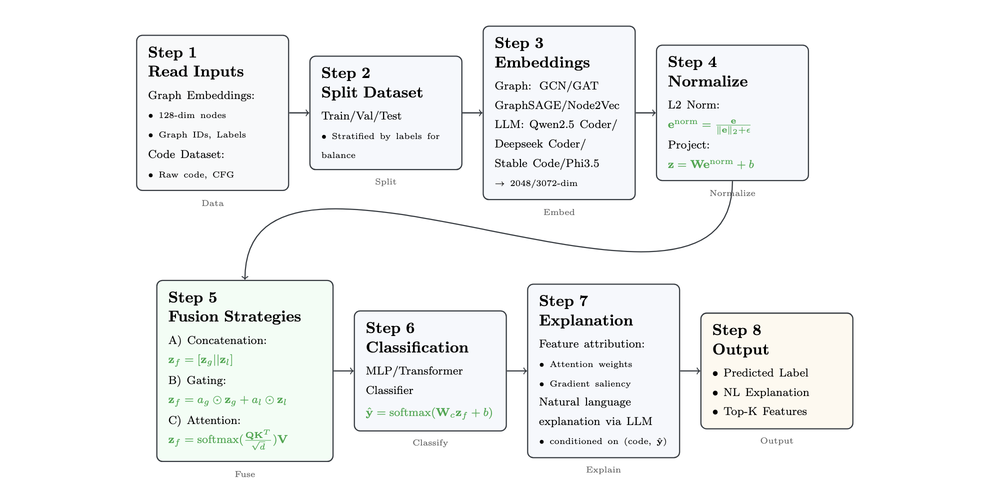

VulnGraph: Bridging Semantics & Structure for Software Vulnerability Detection
VulnGraph is a research project integrating graph neural networks (GNNs) with Large Language Models to improve vulnerability detection in Java code. The system extracts Abstract Syntax Trees (ASTs) and Control Flow Graphs (CFGs) using PROGEX, learns structural embeddings with GNNs, and fuses them with LLM-based semantic reasoning. This hybrid approach enables deeper code understanding and more accurate detection of subtle security flaws in large codebases.
Technologies: Python, Java, PROGEX, Graph Neural Networks (GNNs), PyTorch Geometric, LLMs, HF Transformers
Multi-Agent Financial Assistant
A web-based multi-agent assistant built with the Phi multi-agent framework and Groq-powered LLaMA3, designed for real-time financial queries and intelligent web search. The system delegates tasks between specialized agents (Finance & Web Search), integrates live stock data via yfinance, supports web search with citations, and renders responses in a Markdown chat UI with light/dark theme support.
Technologies: Python, Flask, Phi Data Agents, Groq, yfinance, Google Search API, JavaScript, HTML/CSS
SecureFixAgent: A Hybrid LLM Agent for Automated Python Static Vulnerability Repair

SecureFixAgent is a hybrid agent system that augments static analysis tools (like Bandit) with Large Language Models to detect and repair vulnerabilities in Python source code. The pipeline benchmarks multiple open-source LLMs, parses their outputs for actionable fixes, and automatically injects safe patches into the original files. By combining deterministic static analysis with adaptive LLM reasoning, the agent enhances both accuracy and automation in software vulnerability remediation.
Technologies: Python, LLMs, HuggingFace, Apple MLX, NVIDIA CUDA, Bandit Static Code Analysis, Security
OrderBook++: High-Performance C++ Order Matching Engine with Python Bindings
OrderBook++ is a modular, low-latency order matching engine implemented in modern C++ for simulating and analyzing financial trading systems. It supports limit, market, and cancel orders, maintains bid/ask order books, executes trades with precise matching logic, and tracks a complete trade history. The project exposes Python bindings via pybind11 for interactive experimentation, analytics, and real-time visualization.
Technologies: C++17, pybind11, CMake, Google Test, Python (visualization & demos), Performance Benchmarking
MalCodeAI: AI-Powered Malicious Code Detection

MalCodeAI is a cutting-edge dual-stage pipeline leveraging Large Language Models (LLMs) to detect, exploit, and automatically remediate software vulnerabilities in source code. The system integrates static analysis, exploit simulation, and fix suggestions for autonomous secure coding workflows.
Technologies: Python, LLMs, HuggingFace, Apple MLX, Static Code Analysis, Security Exploit Simulation
Multimodal Sentiment Analysis with CMU-MOSEI Dataset

This project presents a Transformer-based approach for sentiment analysis on the CMU-MOSEI dataset, combining textual, visual, and acoustic cues to achieve deeper emotional understanding. By early fusing multimodal information, the system enhances sentiment prediction performance for complex human communication.
Technologies: Python, PyTorch, HuggingFace, Multimodal Deep Learning, Sentiment Analysis
SciChat: PDF-Aware Scientific Chatbot

SciChat enables interactive question-answering over scientific documents by combining LangChain, Pinecone vector search, and the Mistral7B language model. It provides context-aware responses and is optimized for research assistance, knowledge retrieval, and document comprehension.
Technologies: Python, LangChain, Pinecone, LLMs, NLP
EzyCart: Computer Vision Powered Portable E-Cart System

EzyCart is an AI-powered smart shopping cart system that uses computer vision to automatically identify products, enabling seamless, on-the-go billing & checkout. The project includes a patent published in India and showcases real-time embedded AI, object detection, and edge computing for retail automation.
Technologies: Computer Vision, Edge Computing, Embedded Systems, Python, OpenCV, PyTorch, RoboFlow
Crypt Chat: Encrypted Messaging with Steganography

Crypt Chat is a secure Android messaging application that integrates AES-256 encryption with steganography for covert communication. It enables confidential text exchanges with hidden data transmission embedded within media files, offering enhanced privacy for both personal and sensitive professional use.
Technologies: Android, Java, AES-256, Steganography, Google Firebase